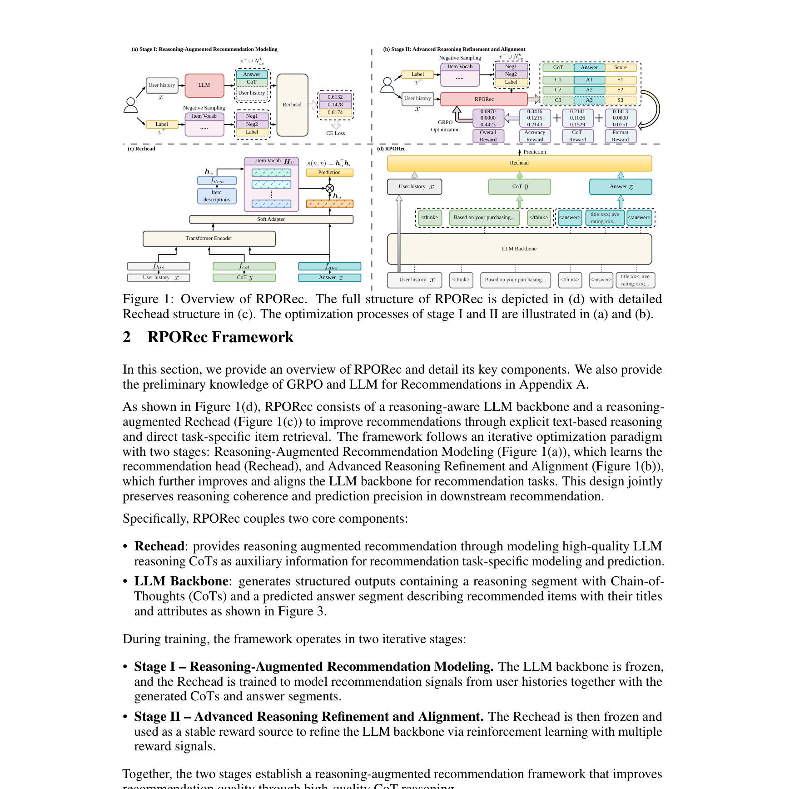
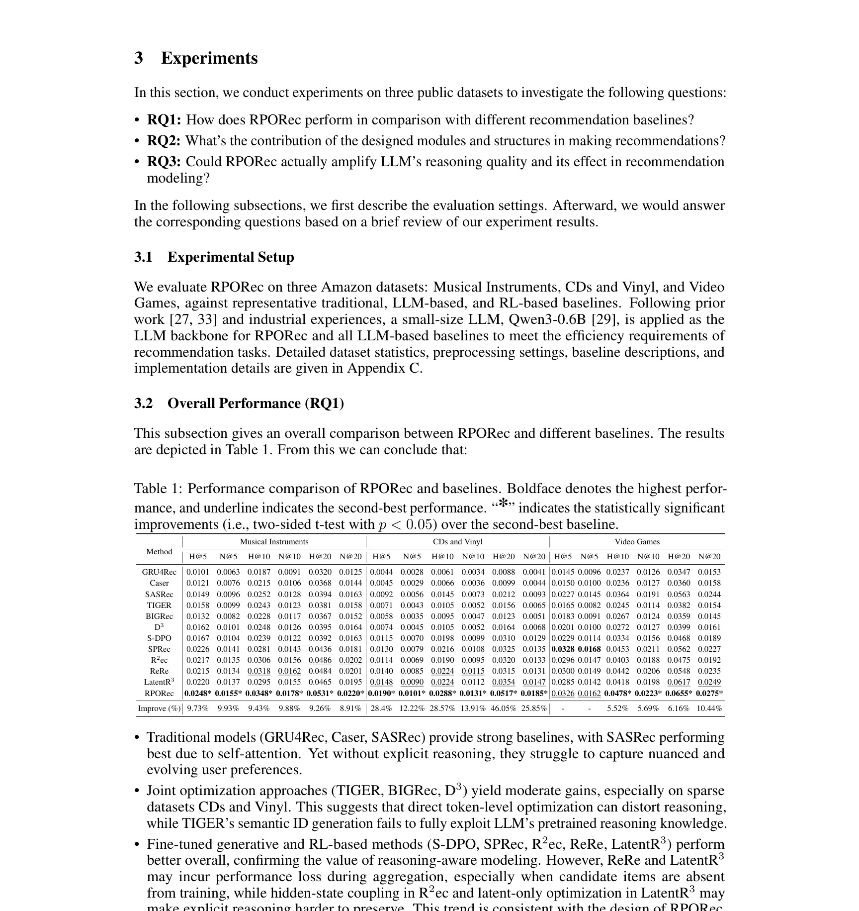
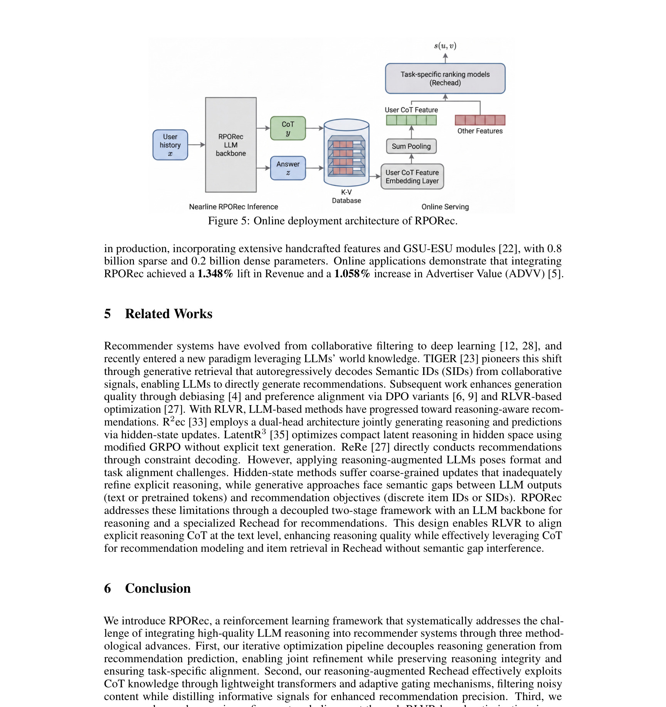

RPORec：Reinforced Preference Optimization for Reasoning-Augmented Recommendations
这里精读一篇 2026-05-21 公开在 arXiv 的论文《Reinforced Preference Optimization for Reasoning-Augmented Recommendations》。中文可以叫《面向推理增强推荐的强化偏好优化》。
论文链接：arXiv:2605.21967 作者：Jingtong Gao, Zeyu Song, Chi Lu, Xiaopeng Li, Derong Xu, Maolin Wang, Peng Jiang, Kun Gai, Qingpeng Cai, Xiangyu Zhao 机构/团队：City University of Hong Kong；Kuaishou Technology。 公开日期：2026-05-21 submitted；arXiv 2605.21967，来源：arXiv cs.IR。 代码/项目页：arXiv 页面和 PDF 本轮未核验到独立代码仓库。 本地 PDF：多校-RPORec.pdf。
0. 导读
它把 LLM 的显式推理接入推荐任务，但没有停留在“让模型生成理由”。RPORec 用推荐头给 reasoning 提供任务反馈，并报告了工业广告系统的 nearline/online 部署形态，适合作为 LLM4Rec 从论文走向链路的样本。
RPORec 包含两阶段：先用高质量 CoT 作为辅助知识训练推荐头，再冻结推荐头，用 GRPO 和多项 reward 对 LLM reasoning 进行偏好优化。实验在 Amazon Musical Instruments、CDs and Vinyl、Video Games 上比较传统、LLM 和 RL 基线，并给出 Kuaishou 广告系统的 nearline user understanding 部署方式。
从今天的候选池看，这篇论文的价值不只是提出一个模型名，而是把推荐或大模型系统中的一个真实工程矛盾拆开：模型能力、候选边界、证据质量、推理成本和线上稳定性不能只靠单一指标解释。下面按背景、方法、实验、个人理解和复现建议展开。
1. 背景与问题
LLM4Rec 的核心矛盾是，大模型擅长把用户历史、物品语义和世界知识写成自然语言推理，但推荐系统最终需要的是可排序、可校准、可低延迟服务的 item 分数。直接把 CoT 文本交给生成模型预测 item，容易出现语义漂移；只把 LLM embedding 当特征，又浪费了显式推理能力。
RPORec 的问题定义很明确：如何让 LLM 的 reasoning 既保持可解释性，又真正对推荐目标负责。作者认为已有方法存在结构破坏和目标错位。推理文本可能很好看，但不一定能提升命中率；推荐头可能能学习 item 表征，却不一定知道哪些 reasoning 片段对排序有用。
这篇论文来自 CityU 与快手团队，论文还给出广告系统部署。相比纯学术 LLM4Rec 工作，它更关心小模型、近线处理、在线 ranking 接入和成本约束。这个视角很重要，因为推荐链路中 LLM 通常不是在线主模型，而是用户理解、内容理解或特征生成模块。

图 1 是 RPORec 的关键。它把 LLM backbone、Rechead、Stage I reasoning-augmented modeling 和 Stage II GRPO alignment 放到同一框架里。读图时要注意 Rechead 不是简单分类头，而是把文本 CoT 中的偏好线索压到推荐表征里，随后又反过来为 LLM reasoning 提供任务相关反馈。 放在背景部分看，它说明论文真正要解决的是系统链路中的瓶颈，而不是单纯追求一个更复杂的网络结构。这个图也给后续方法拆解建立了参照：哪些信息应该先保留，哪些信息应该等到任务或候选明确后再使用。
2. 核心方法
RPORec 的 Stage I 先生成高质量 CoT，把推理作为辅助知识注入推荐头。Rechead 使用 lightweight transformer 与 adaptive gating 处理 CoT 表征，目标是过滤冗余语言，把用户兴趣、物品语义和行为模式压成推荐可用的表示。
Stage II 冻结 Rechead，让它成为稳定的推荐反馈器，然后用 GRPO 优化 LLM backbone。reward 不是单一命中指标，而是包含格式、清洁度、相似性、完整性、实体等多个维度，并把推荐目标反馈给 reasoning 过程。这样做的直觉是让 LLM 学会生成“对推荐有用的理由”，而不是生成一般意义上的漂亮解释。
这套流程的妙处在于解耦。推荐头负责 item retrieval 的精确性，LLM 负责语义推理和兴趣抽象。先训练推荐头，再让推荐头参与强化优化，避免一开始就让自由文本和 item id 预测互相干扰。
在线部署也体现了这种解耦。LLM backbone 不直接服务于每次曝光的毫秒级排序，而是在 nearline 侧分析用户画像和历史行为，抽取 CoT 与答案特征；线上 ranking model 作为任务特定 Rechead 做细粒度打分。

表 1 在三个 Amazon 数据集上比较 H@5/10/20 和 N@5/10/20。RPORec 相对序列推荐、LLM 推荐和 RL 型基线都有提升，作者还用显著性标记说明相对次优方法的差异。这里的重点是 small LLM Qwen3-0.6B 也能通过结构化推荐头获得任务收益，而不是依赖大模型规模。 方法图或结果表在这里的作用是把抽象概念落到可实现模块。复现时应优先复刻这些模块之间的输入输出，而不是只记住论文里的缩写。尤其要关注哪些信号是训练期可得、哪些信号是查询或候选确定后才可得，避免把离线信息泄露到线上评估。
3. 实验与结果
论文在 Amazon Musical Instruments、CDs and Vinyl、Video Games 三个公开序列推荐数据集上评估 H@K 和 N@K。基线覆盖 GRU4Rec、Caser 等传统方法，也包括 LLM-based 与 RL-based 方案。作者使用 Qwen3-0.6B 作为主干，强调效率和部署可行性。
主结果显示 RPORec 在多个 K 值上取得领先。更值得看的是消融：去掉 CoT 输入、去掉 Stage I、去掉 Stage II 或去掉各 reward 项都会造成不同程度下降，说明收益不是单纯来自更大训练量，而是来自 reasoning、Rechead 和偏好优化的组合。
作者还用 Llama3.2-1B 在 CDs and Vinyl 上做 backbone generalization，结果与 Qwen3-0.6B 接近，说明框架不完全绑定某个基座。案例分析展示 CoT reward 会让 reasoning 更聚焦，长度比较也说明训练后推理内容更有结构。
在线部分报告了集成到大规模工业广告系统的 A/B 测试和部署架构，但论文公开文本没有给出所有业务敏感指标细节。因此日报和笔记只把“存在工业部署形态”作为事实，不把线上提升扩展成未核验数字。

图 5 展示线上部署架构：LLM backbone 被放在 nearline 用户理解模块，在线 ranking model 作为 Rechead 使用。这个图对工程最有价值，因为它承认 LLM 不适合直接阻塞在线排序路径，而应先生成可缓存、可特征化的用户兴趣与 reasoning 信号。 读这类结果时不能只看最高值，还要看作者控制了哪些变量。若实验同时改变 backbone、特征、数据切分和后处理，就很难判断收益来源；本轮笔记只采纳论文文本能支撑的结论，对未公开的线上绝对指标和未核验代码状态保持保守。
4. 我的理解
RPORec 的价值在于承认推荐任务需要结构化反馈。很多 LLM4Rec 方法把推荐变成语言生成任务，但 item 命中、曝光偏差、用户短期兴趣和长期偏好都不是普通文本生成奖励能覆盖的。RPORec 让推荐头参与优化，使推理向排序目标靠拢。
我认为它最适合的落地位置不是在线 reranker，而是用户理解与候选解释层。用户最近行为可以被 LLM 压缩成兴趣片段、偏好冲突和意图摘要，再由在线模型消费。这样既利用语言推理，又避免在线延迟过高。
风险在于 CoT 的可解释性容易被误读。模型生成的理由不一定是真实因果，只是对推荐头有用的中间表示。如果业务把 CoT 直接展示给用户，可能产生过度解释或隐私暴露。更稳妥的方式是把 CoT 当内部特征，展示时另做安全过滤。
进一步说，这篇论文可以作为今天两类趋势的交叉样本：推荐系统论文越来越强调候选生成、校准、稳定性和工业链路；LLM 论文越来越强调训练后优化、记忆、检索、推理成本和 runtime。真正值得迁移的不是某个缩写，而是它如何把任务约束写进模型或系统。
5. 工程启发与复现建议
复现可以先在公开序列推荐数据集上实现两个模块：一个小 LLM 生成用户兴趣 reasoning，一个推荐头消费 reasoning embedding 与 item embedding。先不做 GRPO，验证 reasoning- augmented Rechead 是否优于直接文本 embedding。
第二步加入偏好优化。reward 不必一次复刻全部项，可以先用 item hit、文本格式和实体覆盖三个维度。关键是把 reward 分解，避免模型为了命中 item 生成不可读或过长的理由。
线上试验应采用 nearline 特征形态。把 LLM 生成的用户兴趣、类别偏好、负反馈原因、短期意图写入特征服务，线上排序模型只读特征，不直接调用 LLM。评估时同时看转化、延迟、特征新鲜度和隐私合规。
复现时建议先做最小可控实验，再逐步增加模块。第一版只需要验证核心假设是否成立；第二版再引入论文完整的训练目标、缓存策略或图结构；第三版才考虑线上 A/B。这样可以避免为了复现完整论文而忽略业务里最关键的瓶颈。
6. 局限与风险
- 公开实验主要是 Amazon 数据集，无法完全代表短视频、广告和电商混合目标场景。
- CoT 质量与推荐收益之间不一定是因果关系，生成理由可能只是帮助模型拟合训练分布。
- GRPO 训练成本和 reward 设计复杂，业务复现需要稳定的负采样和评估流水线。
- nearline 部署依赖用户历史可用性和更新频率，实时兴趣突变可能无法及时反映。
- 如果 CoT 包含敏感行为或偏好，特征存储和展示都需要严格隐私治理。
这些局限不意味着论文没有价值，而是提醒我们把它放进真实系统时需要额外验证。尤其是推荐和 Agent 场景，离线 benchmark 与线上反馈闭环之间通常存在分布差异，任何离线提升都需要经过延迟、成本、隐私、稳定性和可解释性检查。
7. 后续跟进
- 关注是否开源 RPORec 训练代码，尤其是 Rechead gating 和 reward 组合。
- 在本地数据上测试 nearline LLM 用户理解特征对排序模型的增益。
- 比较 RPORec 与 Rec-R1、SAPO、CausalDPO 等 RL4Rec 方法的奖励设计差异。
- 跟进快手广告部署是否有后续更完整的工业报告或会议版本。
如果后续出现代码、项目页或会议版本，应优先核验实现细节、数据切分和指标口径。今天的笔记基于 arXiv 页面、PDF 原文和可打开的项目链接状态整理，不把未公开信息写成确定事实。
8. 精读补充：落地检查清单
围绕“LLM reasoning、推荐头和近线用户理解”，我会把这篇论文的后续验证拆成事实核验、最小复现、系统接入和风险监控四层。事实核验层只回答论文到底证明了什么：哪些数据集、哪些指标、哪些 baseline、哪些设置是公开可见的，哪些只是作者在摘要或工业场景中概括的结论。最小复现层只验证一个核心假设，不急着复刻全部模块；如果核心假设在小数据、小模型或离线环境中都不稳定，就没有必要直接进入复杂实现。系统接入层关注输入输出契约，明确哪些信号来自训练期、哪些来自查询时、哪些可以进入在线链路、哪些只能作为离线分析。风险监控层则把失败模式写成指标，例如候选覆盖下降、长尾被压制、证据不忠实、延迟超预算、缓存恢复过多、用户隐私字段泄露等。
复现 RPORec 时不要一开始就追求完整 GRPO。第一步可以只做一个小规模 reasoning-to-feature 实验：让 LLM 根据用户历史生成兴趣摘要、正负偏好和候选解释，再把这些文本通过 encoder 输入现有排序模型，观察离线 AUC、NDCG 或 HitRate 是否有增益。第二步才加入 Rechead，让推荐任务反馈哪些 reasoning 片段有用。第三步再尝试偏好优化，并把 reward 拆成 item 命中、格式、实体覆盖、长度和去噪几个部分。工程落地要特别注意 CoT 的使用边界：内部训练可以用长 reasoning，线上特征应压缩成可审计字段，面向用户展示时还要经过隐私和安全过滤。
和今天其他入选论文放在一起看，这篇论文还有一个共同启发：大模型和推荐系统的结合正在从“端到端替换”走向“模块化接入”。推荐侧需要候选边界、行为反馈、广告稳定性和在线成本；LLM 侧需要搜索路径、长期记忆、KV cache 和训练后优化。真正能落地的方案通常不是把所有判断交给一个大模型，而是把大模型产生的语义或推理信号变成可度量、可缓存、可回滚、可审计的中间表示。下一步如果要继续跟进，我会优先看代码是否公开、数据切分是否可复现、指标是否包含稳定性和成本、以及论文里的模块能否独立替换到现有系统中。
9. 精读补充：指标与上线观测
我还会为这篇论文单独设计一组上线前观测指标。第一组是任务主指标，推荐论文看 Recall、NDCG、HitRate、CTR/CVR 或候选增量覆盖，LLM 论文看 Exact Match、证据覆盖、回答忠实性、峰值显存和端到端延迟。第二组是稳定性指标，例如不同随机种子、不同 prompt、不同轻微输入扰动、不同时间窗口下的候选集合和答案是否剧烈变化。第三组是成本指标，包括训练采样次数、推理 token、检索调用数、GPU 显存、P95 延迟和缓存恢复次数。第四组是风险指标，包括隐私字段泄露、历史偏好过期、错误证据改写、长尾 item 被压制、语义标签误分类和线上反馈闭环放大偏差。只有当这四组指标都能解释论文收益来源时，才适合把方法从离线笔记推进到工程试验。
这也是我今天筛选这些论文的主要原因：它们都不只给出一个更高分数，而是提供了一个可以被拆解、监控和复现的系统假设。对推荐系统来说，候选边界、行为证据、广告稳定性和 nearline 特征比“LLM 是否足够强”更关键；对大模型系统来说，搜索路径、长期记忆、KV cache 和证据蒸馏比“上下文是否更长”更关键。后续如果继续读同一方向，我会优先选择那些把这些中间指标公开清楚、并能说明失败案例的论文。